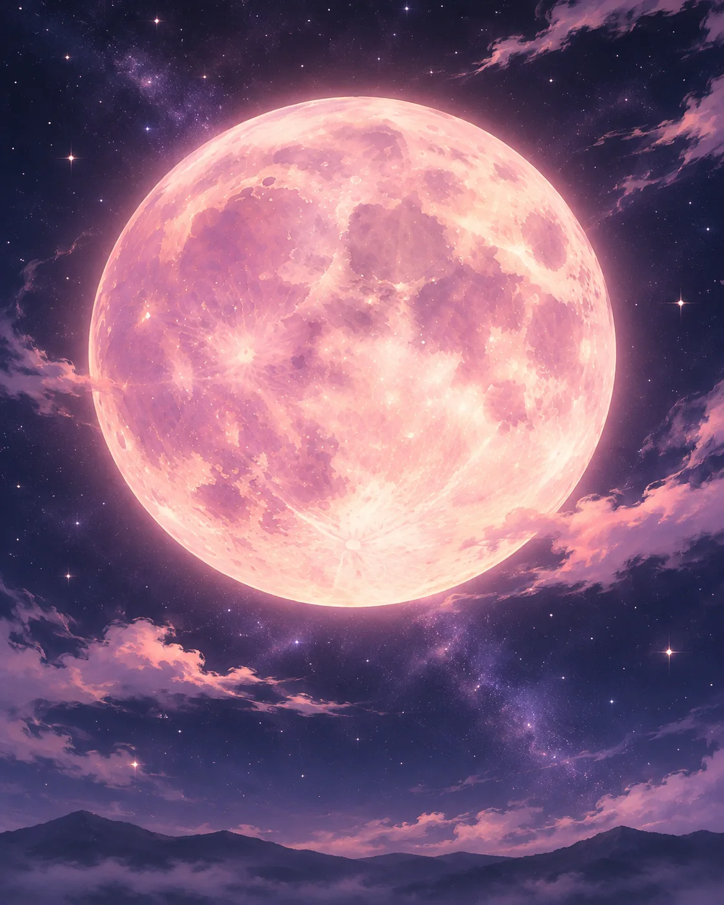
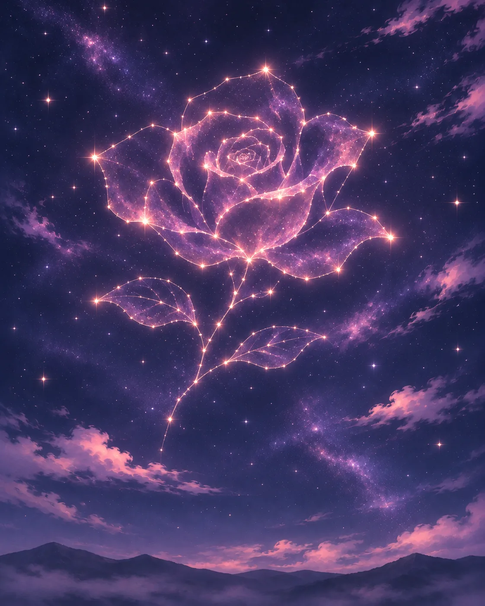
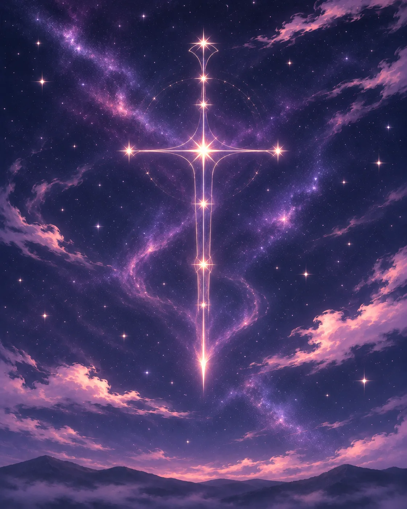
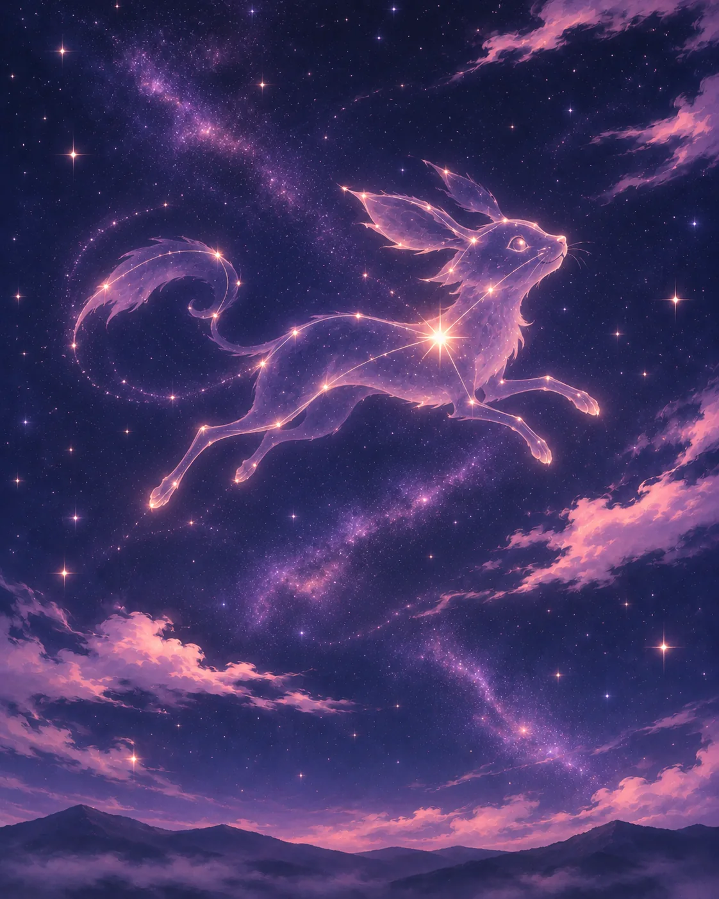

Il pianeta Ellan
Ellan è un mondo di terre, mari, popoli e paesaggi straordinariamente diversi. Le regioni centrali sono generalmente miti e fertili, mentre alle latitudini settentrionali dominano il gelo e le distese fredde; a sud si estendono territori caldi, talvolta aridi.
Le stagioni si succedono con regolarità, ma il loro ciclo è più breve di quello terrestre. Il Mana, presente nel mondo, può accompagnarsi a turbolenze e tempeste elettriche, soprattutto nelle zone vicine alle sue fratture. Nel quadro climatico descritto dai geografi non si registrano uragani.
Scintillante, la luce del giorno
La stella che illumina Ellan è chiamata Scintillante: una stella gialla leggermente più grande di quella che i lettori terrestri chiamerebbero Sole. Per gli abitanti di Ellan, tuttavia, il suo nome è semplicemente Scintillante.
Si dice che Scintillante sorga, riscaldi il mondo e infine si spenga all'orizzonte. Il suo percorso scandisce il lavoro dei campi, le partenze dei viaggiatori e la vita di ogni giorno.
Lucina, la Luna Rosa

Ellan ha un solo satellite naturale, Lucina, la Luna Rosa. La sua superficie mostra delicate sfumature rosate e, in determinati periodi dell'anno, è possibile scorgerla anche durante il giorno.
Lucina influenza le maree ed è tradizionalmente legata a manifestazioni di magia ciclica e illusoria. Fra i Noren, poeti e indovini la chiamano madre dei sogni e della malinconia. Alcuni Weishtar la interpretano invece come l'occhio cieco di Wotan: non le attribuiscono il nome Lucina, ma la osservano come una presenza silenziosa.
La Luna è anche oggetto di culti e tradizioni locali: le sue interpretazioni religiose non sono uguali in tutte le regioni.
Le sette costellazioni maggiori
Marinai, mercanti, pellegrini e studiosi osservano configurazioni stellari tramandate da generazioni. Alle stelle vengono attribuiti significati differenti: alcune aiutano a orientarsi, altre sono al centro di leggende.
La Rosa

Una rosa aperta, visibile soltanto d'estate. Secondo una tradizione, apparve dopo la morte del paladino Percival e fu tracciata da Alidor in memoria del suo sacrificio. Simboleggia amore eterno e dedizione.
Il Grifone del Nord
Un grifone accucciato dalle ali ripiegate, associato a coraggio e protezione. Alcuni giovani Noren lo cercano nel cielo prima delle battaglie.
La Spada Rovesciata

Nota anche come Croce del Sud, ha l'aspetto di una croce sottile rivolta verso il basso. È interpretata come simbolo di resa e protezione divina.
L'Alambicco
Detto anche Clessidra dell'Est: una costellazione riconosciuta di recente, legata al tempo e alla trasmutazione, cara agli studiosi dell'Accademia dell'Artiglio.
Il Grosso Coso
Un ammasso informe a occidente. La sua stella più luminosa è usata come indicazione del sud dai marinai Noren. È anche considerato un possibile presagio di tempesta.
Il Piccolo Coso

Un gruppo più tenue a nord-est. La stella principale indica l'est, utile a carovane e viaggiatori. Alcune storie Weishtar lo collegano alla nascita di un «cuore diviso».
La Coda di Lucertola
Una catena di stelle disposte in una linea spezzata, riconoscibile dalla sua forma irregolare, simile a una coda.
Fenomeni celesti straordinari
L'eclissi di Lucina
Secondo le registrazioni astronomiche, un fenomeno rarissimo, che ricorre ogni 99 anni: Lucina appare interamente nera, circondata da un alone rosato. Nelle tradizioni dei Mid-Feris è collegata al mutamento.
La Caduta delle Gemme
Una pioggia di stelle che ritorna ogni sette anni. Alcune luci sembrano precipitare e scomparire dalla volta celeste. I Weishtar attribuiscono a queste cadute significati divinatori.
La congiunzione del Grifone e della Rosa
Un raro allineamento apparente delle due figure stellari. Le credenze popolari chiamano chi nasce sotto questo fenomeno «Portatore del Giuramento Spezzato», legandolo a racconti di profezie: una tradizione, non un destino accertato.
Le quattro stagioni
Inverno · 3 mesi
Freddo intenso, cieli tersi, racconti accanto al fuoco e lunghi periodi di riposo o preparazione.
Primavera · 2 mesi
La natura rinasce rapidamente; tornano le attività agricole, le fiere e i matrimoni.
Estate · 3 mesi
Calore, raccolti e pellegrinaggi segnano i mesi più luminosi.
Autunno · 2 mesi
Nebbie, vento, migrazioni e ricordi dei defunti accompagnano la stagione del ritorno.
Le descrizioni riguardano il ciclo generale del calendario: le condizioni concrete cambiano molto fra Icelands, Reami e territori meridionali.
L'anno e i dieci mesi di Ellan
Un anno di Ellan dura 300 giorni, divisi in 10 mesi di 30 giorni. La Chiesa di Alidor diffuse una numerazione dei mesi (Primo, Secondo e così via), ma nella vita comune restano molto usati i nomi tradizionali, legati al succedersi delle stagioni.
| № | Mese | Stagione | Tradizione |
|---|---|---|---|
| 1 | Ghiaccioscuro | Inverno | Notti lunghe, racconti e fuochi |
| 2 | Candorimanto | Inverno | Nevi candide e ricordo |
| 3 | Rinvergente | Fine inverno | Germogli sotto il ghiaccio e speranza |
| 4 | Vermiluce | Primavera | Prime luci calde e danze |
| 5 | Fioriluce | Primavera | Nozze e fiere |
| 6 | Solestivo | Estate | Giochi d'acqua e raccolti verdi |
| 7 | Bruciacielo | Estate | Grande caldo e fuochi rituali |
| 8 | Ricolmo | Estate | Abbondanza e festa dei frutti |
| 9 | Fogliaombra | Autunno | Memoria dei defunti |
| 10 | Nebbiavento | Autunno | Nebbie, venti e riposo |
Una data può essere espressa così: «Settimo giorno di Fioriluce, anno 157 dei Reami». In questo modo lo stesso giorno può essere ricordato con un anno diverso altrove, pur mantenendo il nome del mese.
Come si contano gli anni
I popoli di Ellan condividono il ciclo dei mesi, ma ogni Stato può scegliere il proprio avvenimento fondativo per numerare gli anni. Non esiste un calendario globale universalmente riconosciuto. La guerra contro le Razze Primarie sopravvive in racconti e cronache antiche, senza una data storica certa.
| Calendario | Anno del presente narrativo | Evento di riferimento |
|---|---|---|
| Impero della Luna | 75 | Fondazione del regno da parte di Augustus Ombralunare; l'Impero nacque in seguito con Caesar |
| Reami | 157 | Invasione dei Lupi, circa 157 anni fa |
| Shine | 300 | Fondazione della Chiesa di Alidor, circa tre secoli fa |
| Iceblood | 23 | Matrimonio di Cristal Swan Igor V ed Elena Rubies, inizio dell'Era della Rinascita |
Le cronologie indicano il periodo attuale dell'ambientazione, non il calendario terrestre. L'Era della Rinascita di Iceblood prende avvio dall'anno zero; il regno e la sua dinastia sono ben più antichi.
Le monete di Ellan
Negli Stati noren è in uso un sistema monetario comune: monete d’oro, d’argento e di rame. Gli Stati coniano monete con effigi differenti, ma ogni taglio contiene la stessa quantità di metallo prezioso e ha lo stesso valore, indipendentemente da dove sia stato coniato. Questo sistema favorisce anche gli scambi con le comunità umane di Horgon.
1 moneta d’oro = 10 monete d’argento = 100 monete di rame.
Di conseguenza, una moneta d’argento vale 10 monete di rame.
Il cielo nella vita quotidiana
Scintillante guida le attività del giorno; Lucina, le costellazioni e le stelle aiutano a immaginare, ricordare, orientarsi. Alcuni vi scorgono segni del Mana, altri li studiano come fenomeni naturali, altri ancora li interpretano attraverso la fede. È il medesimo cielo, osservato da popoli differenti.
La fauna e gli ambienti del mondo sono descritti nel Manuale naturalistico; le interpretazioni spirituali appartengono ai gazzettini delle religioni.